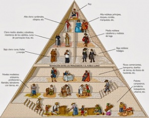

La Edad Media
La Edad Media es el periodo histórico que abarca desde la caída del Imperio Romano de Occidente en el año 476 d.C. hasta la caída de Constantinopla en 1453 o el descubrimiento de América en 1492. Estos mil años estuvieron marcados por el feudalismo, la influencia de la Iglesia católica y una sociedad estamental y rural.
Periodización
- Alta Edad Media (siglos V al X): Se caracteriza por el nacimiento del feudalismo, la ruralización de la sociedad y el fortalecimiento de la Iglesia y la nobleza rural. Se fragmenta el poder del antiguo Imperio Romano.
- Baja Edad Media (siglos XI al XV): Se consolida el feudalismo y la sociedad estamental. El aumento de la producción agraria propicia el auge de las ciudades, el comercio, las universidades y un renacer cultural, aunque también es una época de guerras, epidemias y conflictos sociales.
Organización social, económica y política
- Feudalismo: Fue el sistema social, económico y político predominante. Se basaba en relaciones de vasallaje entre señores y vasallos. El rey cedía tierras (feudos) a la nobleza a cambio de fidelidad y servicio militar, mientras que los campesinos trabajaban esas tierras a cambio de protección.
- Sociedad estamental: La sociedad estaba rígidamente dividida en estamentos, sin movilidad social, y se organizaba de manera piramidal.
- Rey: Ocupaba la cúspide, considerado elegido por Dios. Compartía el poder con la nobleza y el clero.
- Nobleza: Estamento privilegiado (duques, condes, caballeros) encargado de la protección militar. Vivían en castillos y administraban sus territorios.
- Clero: Formado por miembros de la Iglesia (sacerdotes, obispos, monjes), se dividía en alto y bajo clero. Tenía un enorme poder cultural, social y económico, además de poseer tierras.
- Campesinos: La mayoría de la población. Eran el estamento no privilegiado, se dedicaban a la agricultura de subsistencia y dependían del señor feudal.

Economía rural:
La economía se basaba en la agricultura de subsistencia. La mayor parte de la población vivía en el campo, en torno a los feudos.
Religión y cultura
El teocentrismo: La religión era el núcleo de la vida en la Edad Media. La Iglesia católica tuvo una influencia enorme, controlando gran parte de la riqueza y el pensamiento de la época.
Arte medieval: Predominan los temas religiosos. Destacan dos estilos arquitectónicos:Románico (siglos XI-XII): Caracterizado por arcos de medio punto y grandes muros. Simboliza la época de consolidación del feudalismo.
Gótico (siglos XII-XV): Caracterizado por el uso de arcos ojivales y vitrales, que transmiten luminosidad y altura, reflejando el auge de las ciudades.
Desarrollos culturales: Surgen manifestaciones como los cantos gregorianos, los cantares de gesta y el desarrollo de las primeras universidades. El conocimiento era preservado en los monasterios, donde los monjes copiaban manuscritos.
Eventos relevantes
- Caída del Imperio Romano (476): Marca el inicio de la Edad Media y la fragmentación del poder en Europa occidental.
- Expansión del islam: A partir del siglo VII, el islam se expandió por Oriente Medio, el norte de África y la península ibérica, generando una interacción cultural y conflictos, como las Cruzadas.
- Cruzadas: Guerras religiosas iniciadas en el siglo XI para recuperar Tierra Santa de manos de los musulmanes.
- Formación de reinos: Se consolidaron reinos como el de los visigodos en la península ibérica o el Imperio Carolingio de Carlomagno.
- Final de la Edad Media: El auge de la monarquía absoluta, el crecimiento de las ciudades, el surgimiento de la burguesía, el desarrollo del estado moderno y eventos como la caída de Constantinopla (1453) y el descubrimiento de América (1492) marcan el final de este periodo.